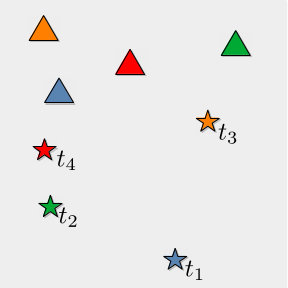
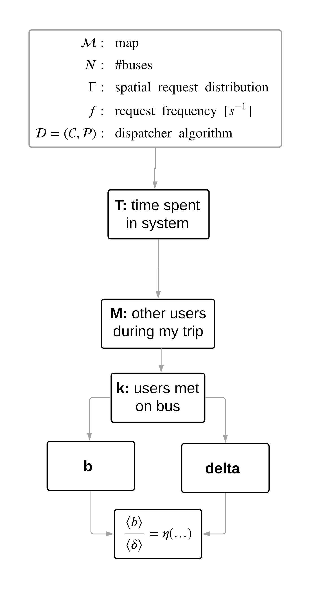

|  |  |
|
|
Private car very convenient. inefficient. |
Ride pooling (shared taxi) |
Can we model the function \(f_{80}(N)\)?
| \[ \begin{aligned} \overbrace{N\langle b\rangle}^\text{supply}\cdot \color{red}{p_\text{busy}}&=\overbrace{f\underbrace{\langle t\rangle\langle\delta\rangle}_\text{time on bus}}^\text{demand}\cdot \color{blue}{p_\text{served}}\\~\\ f_{80}&=\underbrace{\eta}_{=\langle b\rangle/\langle\delta\rangle}\dfrac{N}{\color{blue}{0.8}}\cdot\color{red}{1} \end{aligned} \] |
|


|
\[ \begin{aligned} \langle Z\rangle&=\sum_{z}z\,p(z)\\ &\fragapply{fragment 3}{=\sum_{z}z\sum_{y}p(z|y)p(y)}\\ &\fragapply{fragment 4}{=\sum_{z}z\sum_{y}p(z|y)\sum_{x}p(y|x)p(x)}\\ &\fragapply{fragment 5}{=\dots} \end{aligned} \] |
|  |
\[
\begin{aligned}
\langle\delta\rangle=\sum_{\delta}\delta\sum_{k}p(\delta|k)\sum_Mp(k|M)\sum_Tp(M|T)p(T)
\end{aligned}
\] \[ \begin{aligned} &\fragapply{fragment 1}{p(T):\text{ request pattern (given)}}\\ &\fragapply{fragment 2}{p(M|T)=e^{-\Lambda}\dfrac{\Lambda^M}{M!}\quad\text{ where }\Lambda=f\cdot T\Rightarrow\langle M\rangle\propto f}\\ &\fragapply{fragment 3}{p(\delta|k):\text{ ellipse model }}\\ &\fragapply{fragment 4}{p(b|k):\,\,k\propto b^*\propto b}\\ &\fragapply{fragment 5}{\color{red}{p(k|M)\,?}} \end{aligned} \] |
how many do I meet on the bus?
| hypothesis: \[\eta=\dfrac{\langle b\rangle(k(f))}{\langle\delta\rangle(k(f))}\propto f^{0.1}\] |